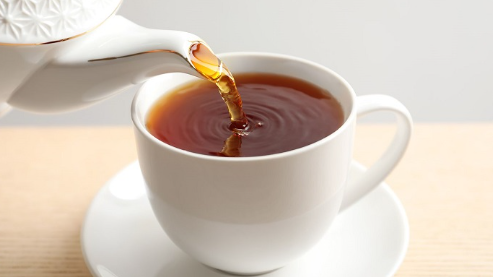
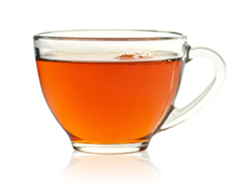

Plain Tea

Tea is a minimally processed drink that’s generally prepared by pouring hot water over the leaves, buds, or stems of the Camellia sinensis plant, resulting in an aromatic infusion.
Since those parts of the plant contain only trace amounts of carbs, tea is virtually a calorie-free beverage (2Trusted Source).
For example, an 8-ounce cup (240 ml) of freshly brewed black tea offers barely 2 calories, which is considered negligible. The same goes for most infusions (3Trusted Source).
As such, plain tea makes an excellent substitute for sugar-sweetened beverages.
Additionally, its caffeine and polyphenol antioxidants provide numerous health benefits, including aiding weight loss, improving heart health, and reducing your risk of chronic disease
Benefits in Plain Tea
- Tea contains antioxidants
- Antioxidants work to prevent the body’s version of rust and thus help to keep us young and protect us from damage from pollution
- Tea contains less caffeine than coffee
- Herbal tea blends have no caffeine and traditional teas have less than 50 percent of what typically is found in coffee. This means you can drink it without as many effects on your nervous system according to nutritionists.
- Tea may reduce your risk of heart attack and stroke
- A recent study found a nearly 20 percent reduction in the risk of heart attack and a 35 percent reduced risk of stroke among those who drank one to three cups of green tea a day. Those who drank four or more cups of green tea daily had a 32 percent reduction in the risk of having a heart attack and lower levels of the bad cholesterol, LDL.
- Tea may help with weight loss
- Although research on this isn’t as strong, studies have shown an effect have depended on consumption of large amounts of tea, often in pill form.
- Tea may help protect your bones
- Data from recent animal studies has shown that green tea may prevent bone loss

For More Information, Click the above Plain Tea Cup